SETBIT 命令的实现¶
SETBIT 用于将位数组 bitarray 在 offset 偏移量上的二进制位的值设置为 value ，
并向客户端返回二进制位被设置之前的旧值：
SETBIT <bitarray> <offset> <value>
以下是 SETBIT 命令的执行过程：
- 计算 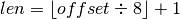 ，
len值记录了保存offset偏移量指定的二进制位至少需要多少字节。 - 检查
bitarray键保存的位数组（也即是 SDS）的长度是否小于len， 如果是的话， 将 SDS 的长度扩展为len字节， 并将所有新扩展空间的二进制位的值设置为0。 - 计算
 ，
，
byte值记录了offset偏移量指定的二进制位保存在位数组的哪个字节。 - 计算
 ，
，
bit值记录了offset偏移量指定的二进制位是byte字节的第几个二进制位。 - 根据
byte值和bit值， 在bitarray键保存的位数组中定位offset偏移量指定的二进制位， 首先将指定二进制位现在值保存在oldvalue变量， 然后将新值value设置为这个二进制位的值。 - 向客户端返回
oldvalue变量的值。
因为 SETBIT 命令执行的所有操作都可以在常数时间内完成，
所以该命令的时间复杂度为  。
。
SETBIT 命令的执行示例¶
让我们通过观察一些 SETBIT 命令的执行例子来熟悉 SETBIT 命令的运行过程。
首先， 如果我们对图 22-2 所示的位数组执行命令：
SETBIT <bitarray> 1 1
那么服务器将执行以下操作：
- 计算 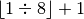 ，
得出值
1， 这表示保存偏移量为1的二进制位至少需要1字节长的位数组。 - 检查位数组的长度，
发现 SDS 的长度不小于
1字节， 无须执行扩展操作。 - 计算 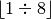 ，
得出值
0， 说明偏移量为1的二进制位位于buf[0]字节。 - 计算 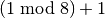 ，
得出值
2， 说明偏移量为1的二进制位是buf[0]字节的第2个二进制位。 - 定位到
buf[0]字节的第2个二进制位上面， 将二进制位现在的值0保存到oldvalue变量， 然后将二进制位的值设置为1。 - 向客户端返回
oldvalue变量的值0。
图 22-6 展示了 SETBIT 命令的执行过程， 而图 22-7 则展示了 SETBIT 命令执行之后， 位数组的样子。
![digraph {
label = "\n 图 22-6 SETBIT 命令的执行过程";
//
node [shape = plaintext];
point_to_byte [label = "1） 定位到 buf[0] 字节"];
point_to_bit [label = "2）定位到 buf[0] 字节的第 2 个二进制位 \n 将位现在的值 0 保存到 oldvalue 变量 \n 然后将位的值设置为 1 "];
buf [label = " { { <byte> buf[0] | 1 | <bit> 0 | 1 | 1 | 0 | 0 | 1 | 0 } | { buf[1] （空字符） } } ", shape = record];
//
edge [style = dashed];
point_to_byte -> buf:byte;
point_to_bit -> buf:bit;
}](../../_images/graphviz-1aac5ce203184eb82535c67eb11255a59e5022a6.png)
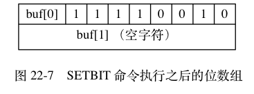
带扩展操作的 SETBIT 命令示例¶
前面展示的 SETBIT 例子无须对位数组进行扩展， 现在， 让我们来看一个需要对位数组进行扩展的例子。
假设我们对图 22-2 所示的位数组执行命令：
SETBIT <bitarray> 12 1
那么服务器将执行以下操作：
- 计算 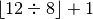 ，
得出值
2， 这表示保存偏移量为12的二进制位至少需要2字节长的位数组。 - 对位数组的长度进行检查，
得知位数组现在的长度为
1字节， 这比执行命令所需的最小长度2字节要小， 所以程序会要求将位数组的长度扩展为2字节。 不过， 尽管程序只要求2字节长的位数组， 但 SDS 的空间预分配策略会为 SDS 额外多分配2字节的未使用空间， 再加上为保存空字符而额外分配的1字节， 扩展之后buf数组的实际长度为5字节， 如图 22-8 所示。 - 计算 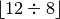 ，
得出值
1， 说明偏移量为12的二进制位位于buf[1]字节中。 - 计算 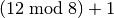 ，
得出值
5， 说明偏移量为12的二进制位是buf[1]字节的第5个二进制位。 - 定位到
buf[1]字节的第5个二进制位， 将二进制位现在的值0保存到oldvalue变量， 然后将二进制位的值设置为1。 - 向客户端返回
oldvalue变量的值0。
图 22-9 展示了 SETBIT 命令定位并设置指定二进制位的过程， 而图 22-10 则展示了 SETBIT 命令执行之后， 位数组的样子。
![digraph {
label = "\n 图 22-8 扩展空间之后的位数组";
rankdir = LR;
//
node [shape = record];
redisObject [label = " redisObject | ... | type \n REDIS_STRING | ... | <ptr> ptr "];
sds [label = " <head> sdshdr | free \n 2 | len \n 2 | <buf> buf "];
buf [label = " { buf[0] | 1 | 0 | 1 | 1 | 0 | 0 | 1 | 0 } | { buf[1] | 0 | 0 | 0 | 0 | 0 | 0 | 0 | 0 } | { buf[2] （空字符） } | { buf[3] （未使用） } | { buf[4] （未使用） } "];
//
redisObject:ptr -> sds:head;
sds:buf -> buf;
}](../../_images/graphviz-f7f8465c6205b8c67bec7f091e0fe773f1223f80.png)
![digraph {
label = "\n 图 22-9 SETBIT 命令的执行过程";
//
node [shape = plaintext];
point_to_byte [label = "1）定位到 buf[1] 字节"];
point_yo_bit [label = "2）定位到 buf[1] 字节的第 5 个二进制位 \n 首先将位现在的值 0 保存到 oldvalue 变量 \n 然后将位的值设置为 1 "];
node [shape = record];
buf [label = " { { buf[0] | 1 | 0 | 1 | 1 | 0 | 0 | 1 | 0 } | { <byte> buf[1] | 0 | 0 | 0 | 0 | <bit> 0 | 0 | 0 | 0 } | { buf[2] （空字符） } | { buf[3] （未使用） } | { buf[4] （未使用） } } "];
//
edge [style = dashed];
point_to_byte -> buf:byte;
point_yo_bit -> buf:bit;
}](../../_images/graphviz-e8d9b42919a10d2205cb57fca78dc87eaf816e8d.png)
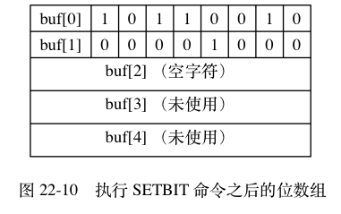
注意，
因为 buf 数组使用逆序来保存位数组，
所以当程序对 buf 数组进行扩展之后，
写入操作可以直接在新扩展的二进制位中完成，
而不必改动位数组原来已有的二进制位。
相反地，
如果 buf 数组使用和书写位数组时一样的顺序来保存位数组，
那么在每次扩展 buf 数组之后，
程序都需要将位数组已有的位进行移动，
然后才能执行写入操作，
这比 SETBIT 命令目前的实现方式要复杂，
并且移位带来的 CPU 时间消耗也会影响命令的执行速度。
图 22-11 至图 22-14 模拟了程序在 buf 数组按书写顺序保存位数组的情况下，
对位数组 0100 1101 执行命令 SETBIT <bitarray> 12 1 ，
将值改为 0001 0000 0100 1101 的整个过程。
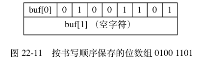
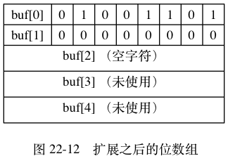
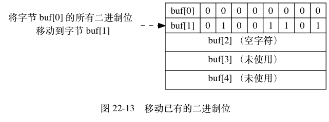
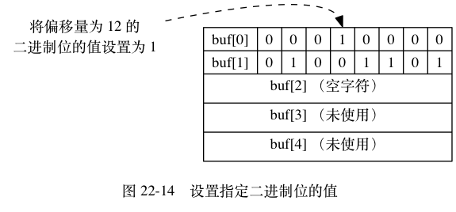